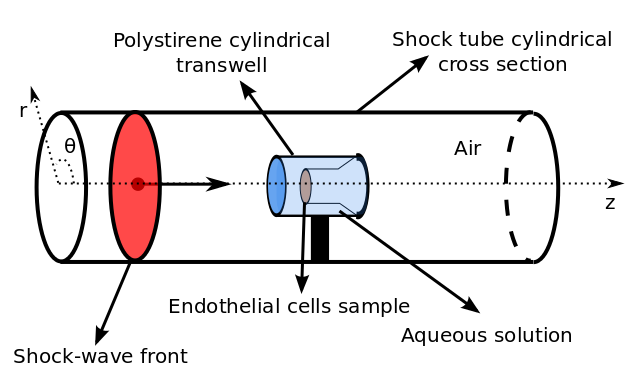

Fluid interface problems applied to traumatic brain injury.
Mauricio Del Razo and Randall J. LeVeque
Traumatic brain injury (TBI)
Interested in brain injury caused by shockwaves:
- Blast waves (civilians and soldiers).
- Car/bike accidents.
- Boxing.
Experimentalists at VA Hospital:
What happens when the shockwave hits?
- Changes in blood-brain barrier diffusion.
- Damage to astrocytes cells.
- Brain cells damage.
- Combination of these.
We are trying to find out...
Experiments done with endothelial cells,
since the blood-brain barrier is composed by them.
Experimental setup:
They have a shock-tube!

We can measure shock profile in air, but how does it look before hitting the cells?
The mathematical model
3D Axisymmetric Compressible euler equations
\[ \begin{aligned}
\frac{\partial}{\partial t}
\left[\begin{array}{c} \rho \\ \rho u_r \\ \rho u_z \\ E \end{array} \right]
+ \frac{\partial}{\partial r}
\left[\begin{array}{c} \rho u_r \\ \rho u_r^2 + P \\ \rho u_r u_z \\ u_r(E+p) \end{array} \right]
+ \frac{\partial}{\partial z}
\left[\begin{array}{c} \rho u_z \\ \rho u_r u_z \\ \rho u_z^2 + p \\ u_z(E+p) \end{array} \right]
= \left[\begin{array}{c} -(\rho u_r)/r \\ -(\rho u_r^2)/r \\ -(\rho u_r u_z)/r \\ -u_r(E+p)/r \end{array} \right]
\end{aligned}
\]
- Good to model acoustic pressure propagation.
- Nonlinearity allows shock formation.
- Energy equation connects w/temperature (relevant for cell damage).
The mathematical model
How to model Interfaces?
Stiffened gas equation of state (SGEOS):
\[
p = \underbrace{(\gamma - 1)}_{\text{Ideal gas}} \rho e -\underbrace{\gamma P_{\infty}}_{\text{Stiffening term}}
\]
Different materials = different parameters for SGEOS
The mathematical model
Numerical methods:
- High resolution finite volume methods.
- HLLC approximate Riemann solver.
- Dimensional splitting.
- Fractional step method for source terms.
- Implemented into Clawpack.
Some computational results
1D Air-Plastic-Water interface
Some computational results
From 1D simulations...
- Pressure amplitude increases when crossing interface.
- As Plastic interface gets thinner, it becomes negligible.
- Plastic-water could play role of skull-brain.
Some computational results
3D Axisymmetric Air-Water interface
Some computational results
What we learned...
- We can compute pressure profile in water before hitting the cells.
- Physical insight of the effects of the interface: reflection, elongation, amplification, etc...
- If pressure becomes higher inside brain, damage could be underestimated.
- Geometry might become very relevant when dealing with a skull.
Future work
- Comparison with experiments.
- Incorporate transverse solvers.
- Implement arbitrary interfaces (like a skull).
- Add moving or vibrating interfaces.
- Make connection to biological effects (not easy).